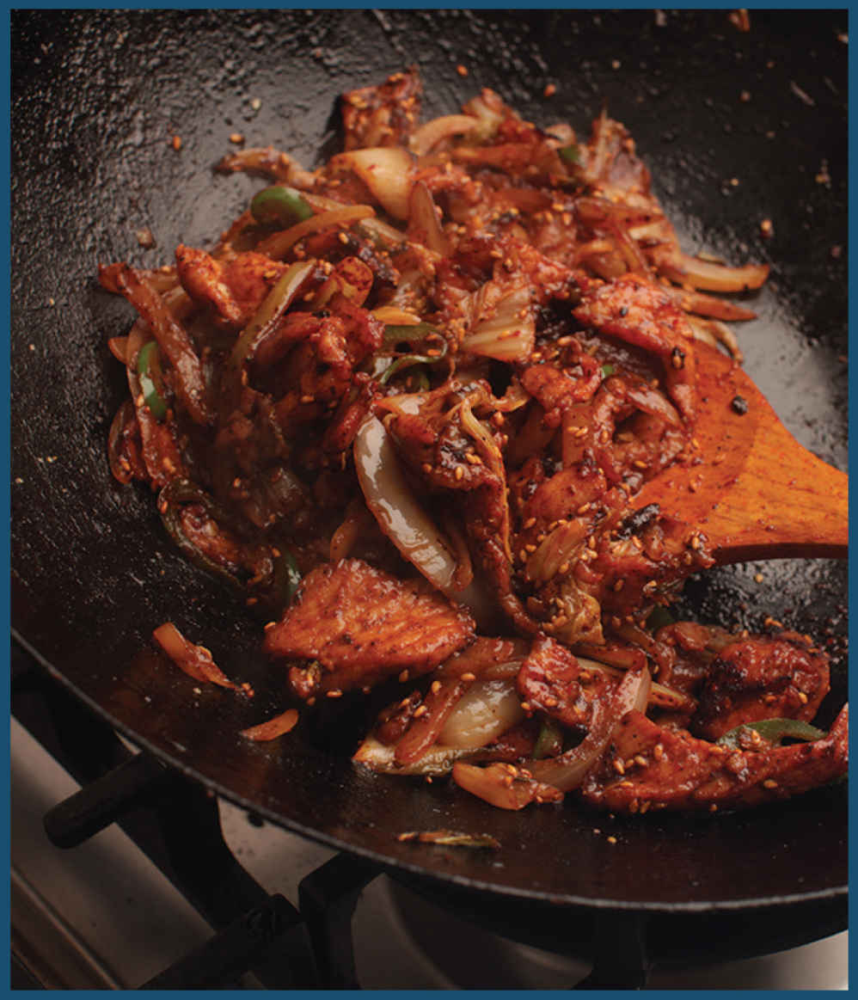

Depending on what part of the pig it comes from, pork can vary hugely in terms of toughness, fat content, connective tissue content, and flavor and thus must be cooked using different methods. For quick stir-fries using slices or strips of meat, you’re looking for cuts that are naturally tender. Tougher cuts like pork butt (aka pork shoulder),* fresh ham, or rib meat won’t cook for long enough to tenderize, giving you stringy, tough results. These cuts are typically better for techniques that reduce either the length of these connective tissues (such as grinding or mincing) or for slow-cooked dishes where tough connective tissue is tenderized.
For stir-fries, this leaves a few options:
•Pork loin is a relatively pale, lean, tender cut typically used for roasts. It is widely available, easy to prep, and great for most recipes (as long as you are careful not to overcook it!).
•Pork sirloin is a little darker with more fat and connective tissue. Still quite tender and easy to work with, it’s my preferred cut for most recipes.
•Country-style ribs are not actually ribs. They’re cutlets cut from the blade end of the loin that typically contain some shoulder meat and some loin meat. Country-style ribs can be quite flavorful and juicy but will have quite a bit more fat and connective tissue. They can be treated just like pork loin if you don’t mind the occasional bit of chewy fat or connective tissue (I don’t) but should be trimmed if you’re worried about how your guests will judge you on such things.
•Tenderloin comes from the inside of the spine and is the most tender and the leanest cut on the hog. It’s fine for stir-fries, but typically more expensive than other cuts, as well as more prone to drying out, so I would avoid it.
•Ground pork is in a category of its own, typically used to flavor vegetables, noodles, or tofu, or for meatballs, as a filling in dumplings, or in other dim sum. Ground pork with a very high fat content (like ground pork belly or extra-fatty pork butt/shoulder) is best for dumplings and other fillings. Leaner ground shoulder or ground sirloin is my preference for stir-fries.
As with chicken, lean pork does best with either marinating (here) or velveting (here) before cooking. In addition to standard marinade ingredients, pork can be treated with baking soda to tenderize it (see “Baking Soda and Deep Tissue Massage” on here for some more on the science).
*Despite the confusing name, pork butt is actually just another term for pork shoulder. It got its name from the style of barrel it was packed into for shipment back when New England used to be a pork production powerhouse. Actually pork rear ends are sold as fresh pork ham.